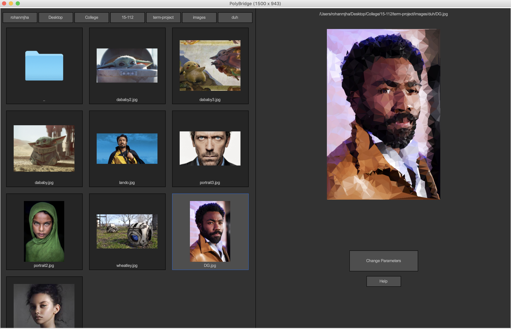

Rohan Jha
LowPolyGen is a Python application I developed as my Fundamentals of Programming and Computer Science (15-112) term project. LowPolyGen mimics the design of Adobe Bridge, an app used for quick previews of images. Instead of a preview, however, I implemented an algorithm using Canny edge detection and Delaunay triangulation to generate a "Low Poly" style render of the selected image.
 Impressionator September 2019Impressionator is a web app developed by myself, Bill Qin, Harvey Zheng, and Dakota Hernandez for the 2019 HackCMU Hackathon to generate novel text in the style or styles of predefined corporae (e.g. Trump's Twitter feed, Obama's SOTU addresses, The Holy Bible, etc.). It uses Markov matrices of connected word frequences to take random walks to generate novel text, and can be merged with another model to make a synthesis of the two styles.
Matrix Calculator May 2019Matrix Calculator is a project I made in my senior Linear Algebra class at La Jolla Country Day. Written in C++, it allows users to input matrices and perform a variety of operations on them, including addition, multiplication, inversion, and iteratively computing its eigenvalues using the QR algorithm.